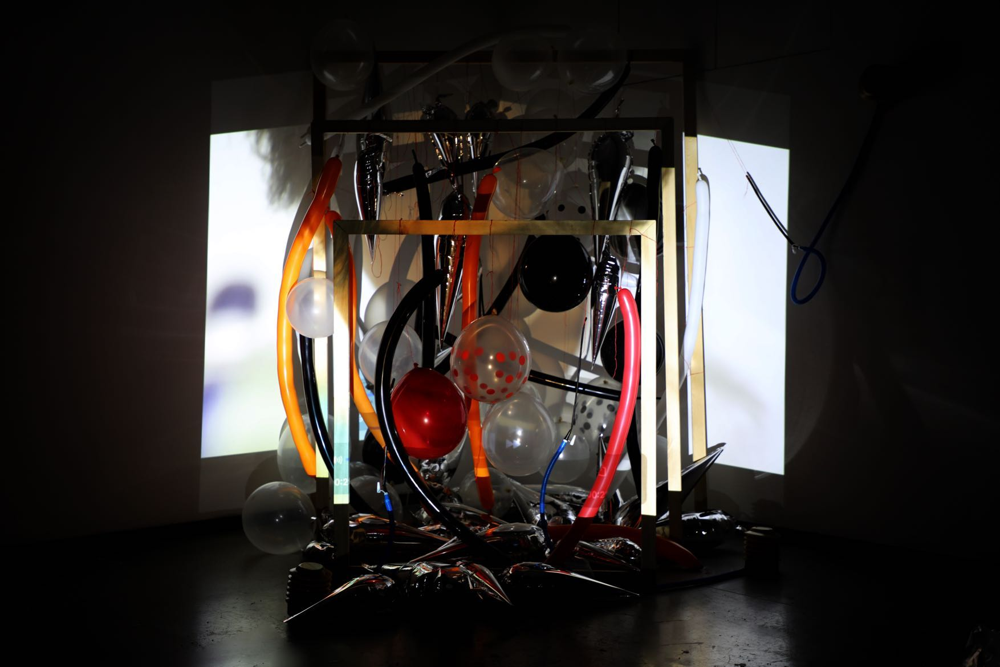
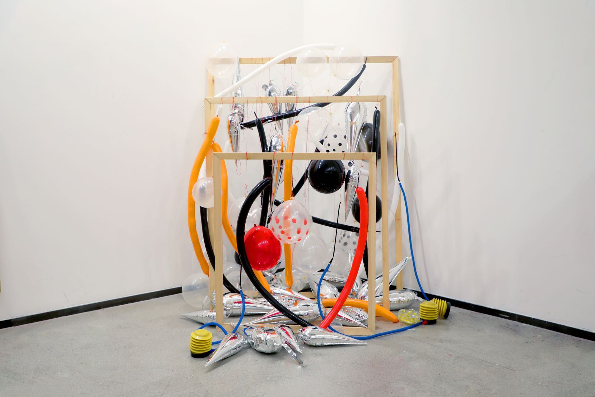
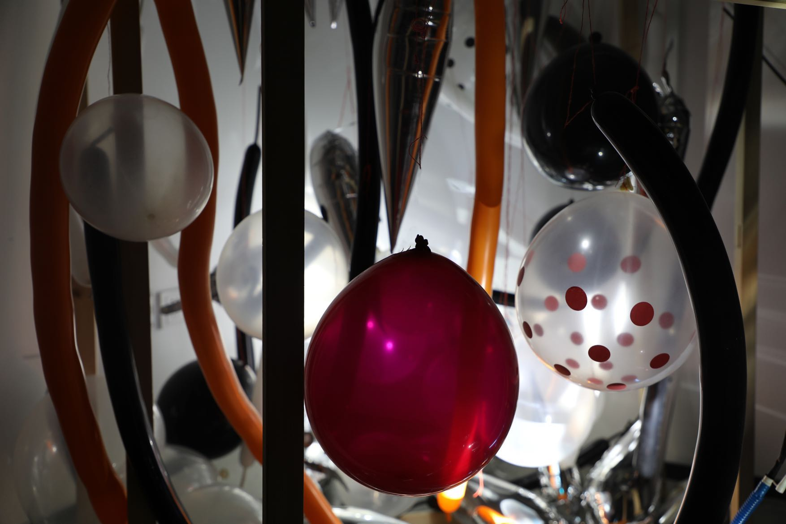
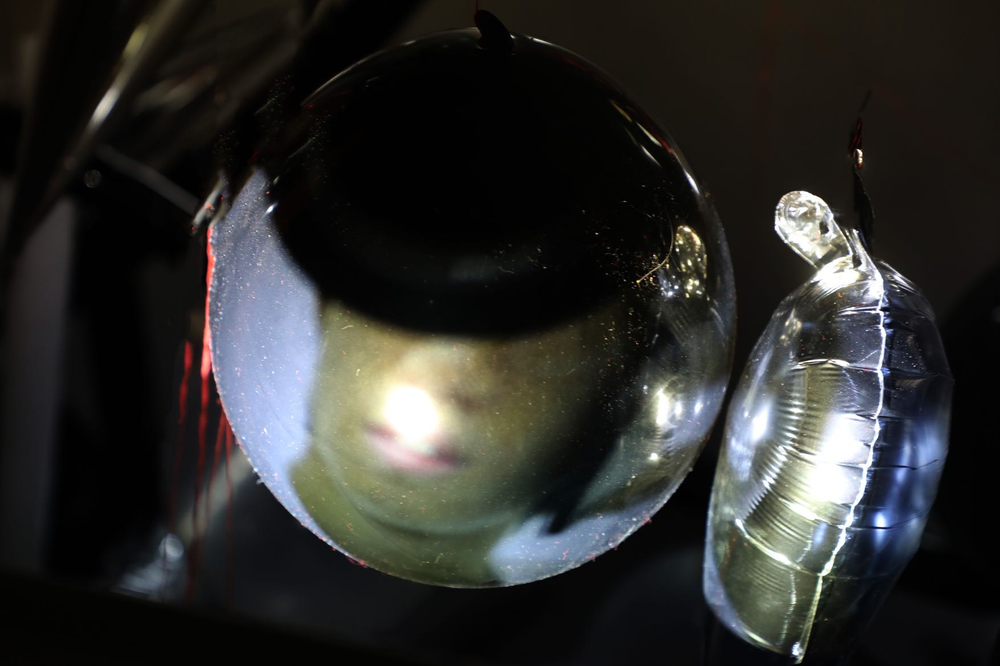

Flowing Tension
2021 · Video installation · Balloons, wooden frames, projection

Flowing Tension gives the pressure of everyday relationships a physical form. Balloons hang within three layers of wooden frames as scenes of life with friends and family pass across them. Bright, fragile surfaces interrupt the images, turning familiar moments into an uneasy space of tension and distortion.


